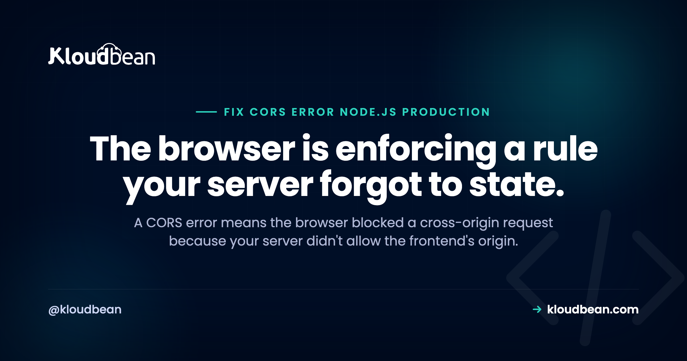

CORS Errors in Node.js Production: Why It Works Locally but Fails Live

Almost everyone meets the same wall the first time they split a frontend and a Node API across two domains: the app works perfectly on localhost, ships to production, and the browser console fills with blocked by CORS policy: No 'Access-Control-Allow-Origin' header is present. Nothing in your code changed. What changed is the origin. CORS is a browser rule about who's allowed to call your API, and your server has to say the frontend is on the list. Here's exactly why it flips in production and how to fix it without punching a security hole.
Configure your server to return an Access-Control-Allow-Origin header that includes your frontend's real production origin, not just localhost. In Express, use the cors package with an allowed-origins list read from an environment variable. If you send cookies, set credentials: true and list the exact origin (you can't use * with credentials). Make sure preflight OPTIONS requests are handled, and don't set CORS headers in both the app and the proxy.
What a CORS error actually is
CORS (Cross-Origin Resource Sharing) is a browser security mechanism. When your frontend at https://app.example.com calls an API at https://api.example.com, those are different origins, and the browser refuses to hand the response to your JavaScript unless the API explicitly says that origin is allowed, via response headers like Access-Control-Allow-Origin. The key insight: CORS is enforced by the browser but configured on the server. The request often reaches your API and even runs; the browser just blocks your code from reading the response because the permission header wasn't there. That's why it's a server fix, not a frontend one.
Why it works locally and breaks in production
On your machine, the frontend and API usually share an origin or you've wired a dev proxy, so requests are effectively same-origin and CORS never triggers. In production they're typically on separate domains or subdomains, which is genuinely cross-origin, so the browser starts enforcing. The second half is configuration: a lot of CORS setups hardcode http://localhost:3000 as the allowed origin, which of course doesn't match your real production frontend. Same code, different origin, and the header no longer matches. That single mismatch is behind most "works locally, CORS in prod" reports.
Fix it in Express, the right way
Use the cors package and drive the allowed origins from an environment variable so each environment lists its own real frontend:
const cors = require("cors");
// CORS_ORIGINS="https://app.example.com,https://admin.example.com"
const allowedOrigins = (process.env.CORS_ORIGINS || "").split(",").filter(Boolean);
app.use(cors({
origin: allowedOrigins, // exact origins, no trailing slash
credentials: true, // only if you send cookies / auth headers
}));Now production allows the production frontend and dev allows localhost, because each environment sets its own CORS_ORIGINS. No code change between them, just config. This is the clean version, and it also keeps you from the lazy fix that causes real problems next.
The wildcard-plus-credentials trap
When people get frustrated they reach for origin: "*" to allow everything. Two problems. First, it's a security smell, you're inviting any site to call your API. Second, and this one is a hard browser rule: you cannot combine a wildcard origin with credentials. If you set Access-Control-Allow-Credentials: true (needed for cookies), the browser rejects a * origin outright, so cookie-based auth silently breaks. The correct approach is to reflect only trusted origins from your allowlist:
// When you need credentials, echo back only an allowed origin
app.use(cors({
origin: (origin, callback) => {
if (!origin || allowedOrigins.includes(origin)) return callback(null, true);
return callback(new Error("Not allowed by CORS"));
},
credentials: true,
}));Resist the urge to make the error vanish with a wildcard. Allow the origins you actually trust, and keep the door shut to everyone else.
Preflight (OPTIONS) requests
For anything beyond a simple request (custom headers, PUT/DELETE, JSON with certain content types), the browser first sends a preflight OPTIONS request asking "am I allowed to do this?" Your server has to answer that too. The good news is the cors middleware handles OPTIONS automatically when applied app-wide. If you set headers by hand or only on specific routes, a common bug is forgetting to respond to OPTIONS, so the preflight fails and the real request never fires. If your GET works but your POST gets blocked, unhandled preflight is the usual suspect.
Double headers: app versus proxy
Here's a sneaky one in production. If your Node app sets CORS headers and your Nginx (or other proxy) also adds them, the response can carry Access-Control-Allow-Origin twice. Browsers treat a duplicated allow-origin header as invalid and block the request, even though each layer looks correct on its own. Pick one place to own CORS, usually the app, and make sure the proxy isn't adding its own. If a response looks correct but the browser still complains, inspect the actual response headers for duplicates.
Common gotchas checklist
- Protocol and trailing slash.
https://app.example.comandhttp://app.example.comare different origins, and a trailing slash in the allowed value won't match. Match exactly. - Error responses. If an error path skips your CORS middleware, the browser reports CORS instead of the real error. Make sure headers apply to error responses too.
- Auth headers. Sending an
Authorizationheader can trigger preflight; make sure it's allowed. - Subdomains.
www.versus the apex domain are different origins. List both if you use both.
| Symptom | Likely cause | Fix |
|---|---|---|
| No Access-Control-Allow-Origin | Prod origin not in allowlist | Add real frontend origin via env |
| Cookies stop working | Wildcard origin with credentials | List exact origin, credentials true |
| GET works, POST blocked | Unhandled preflight OPTIONS | Let cors middleware handle OPTIONS |
| Header present but still blocked | Duplicate header from app + proxy | Set CORS in one place only |
Where managed config helps, and where it doesn't
Straight answer: CORS is your application's responsibility, and no host "fixes" it for you, because only your code knows which origins to trust. What a managed platform does help with is the part that actually causes the production surprise, environment configuration. On Kloudbean you set CORS_ORIGINS (and the rest of your config) per environment in the console, so production naturally lists your production frontend and never quietly falls back to localhost. That removes the config mismatch behind most prod CORS errors, while the policy itself stays where it belongs, in your app.

The next questions this raises
CORS sits next to your other HTTP security settings. See the security headers guide for the broader picture, environment variables done right for the per-environment config that fixes the localhost mismatch, and deploy an Express app for the framework side. If a proxy is in the mix, Nginx reverse proxy for Node covers the duplicate-header trap, and custom domain and SSL covers getting your origins onto real HTTPS domains.
Read the log, fix it, ship again.
Deploy from Git, watch the build output as it runs, and open the app error log when a process refuses to start. Managed processes restart on crash, and backups are automatic.
- ✓ Live build logs
- ✓ Deployment history
- ✓ Logs viewer
- ✓ Managed process restarts
- ✓ Automatic backups
- ✓ Git deploy
Plans from $8/mo · Free migration assistance · Free trial
FAQ
Why does CORS work on localhost but fail in production?
Locally your frontend and API are usually the same origin or behind a dev proxy, so CORS never triggers. In production they're on different domains, which is cross-origin, so the browser enforces the policy. If your allowed origin is hardcoded to localhost, it won't match the real frontend, and you get a CORS error. Drive allowed origins from an environment variable instead.
How do I fix 'No Access-Control-Allow-Origin header is present'?
Configure your server to return that header with your frontend's production origin. In Express, use the cors package with an allowed-origins list from an environment variable. The request may already reach your API, but the browser blocks your code from reading the response until the header names an allowed origin.
Can I just set Access-Control-Allow-Origin to *?
You can, but you shouldn't in most cases, and you can't at all if you send cookies. A wildcard invites any site to call your API, and browsers reject a wildcard origin combined with credentials, so cookie auth breaks. Reflect only the origins you trust from an allowlist, and keep credentials working by naming exact origins.
Why does my GET work but my POST get blocked by CORS?
Because the POST triggers a preflight OPTIONS request that your server isn't answering. The browser asks permission before the real request, and if that preflight fails, the POST never fires. Applying the cors middleware app-wide handles OPTIONS automatically, which usually clears this immediately.
The header looks correct but the browser still blocks it, why?
Check for a duplicated Access-Control-Allow-Origin header. If both your Node app and your proxy add CORS headers, the response carries it twice, which browsers treat as invalid. Own CORS in exactly one layer, usually the app, and make sure the proxy isn't adding its own copy.
Is CORS something my host configures?
No, CORS is your application's responsibility, since only your code knows which origins to trust. A host can't set it for you. What a managed platform helps with is per-environment configuration, so production lists your production frontend rather than falling back to a localhost value, which is where most production CORS errors come from.